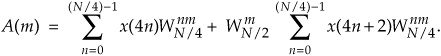
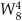
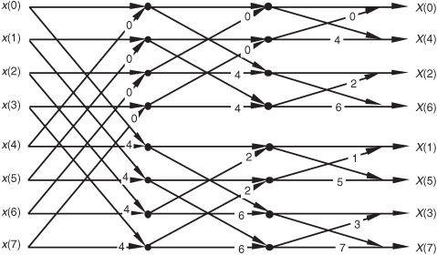
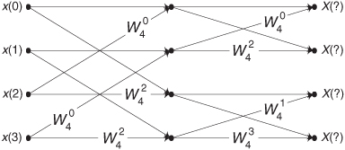
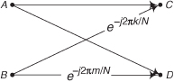

4 The Fast Fourier Transform
Although the DFT is the most straightforward mathematical procedure for determining the frequency content of a time-domain sequence, it’s terribly inefficient. As the number of points in the DFT is increased to hundreds, or thousands, the amount of necessary number crunching becomes excessive. In 1965 a paper was published by Cooley and Tukey describing a very efficient algorithm to implement the DFT[1]. That algorithm is now known as the fast Fourier transform (FFT).† Before the advent of the FFT, thousand-point DFTs took so long to perform that their use was restricted to the larger research and university computer centers. Thanks to Cooley, Tukey, and the semiconductor industry, 1024-point DFTs can now be performed in a few seconds on home computers.
† Actually, the FFT has an interesting history. While analyzing X-ray scattering data, a couple of physicists in the 1940s were taking advantage of the symmetries of sines and cosines using a mathematical method based on a technique published in the early 1900s. Remarkably, over 20 years passed before the FFT was (re)discovered. Reference [2] tells the full story.
Volumes have been written about the FFT, and, as for no other innovation, the development of this algorithm transformed the discipline of digital signal processing by making the power of Fourier analysis affordable. In this chapter, we’ll show why the most popular FFT algorithm (called the radix-2 FFT) is superior to the classical DFT algorithm, present a series of recommendations to enhance our use of the FFT in practice, and provide a list of sources for FFT routines in various software languages. We conclude this chapter, for those readers wanting to know the internal details, with a derivation of the radix-2 FFT and introduce several different ways in which this FFT is implemented.
4.1 Relationship of the FFT to the DFT
Although many different FFT algorithms have been developed, in this section we’ll see why the radix-2 FFT algorithm is so popular and learn how it’s related to the classical DFT algorithm. The radix-2 FFT algorithm is a very efficient process for performing DFTs under the constraint that the DFT size be an integral power of two. (That is, the number of points in the transform is N = 2k, where k is some positive integer.) Let’s see just why the radix-2 FFT is the favorite spectral analysis technique used by signal processing practitioners.
Recall that our DFT Example 1 in Section 3.1 illustrated the number of redundant arithmetic operations necessary for a simple 8-point DFT. (For example, we ended up calculating the product of 1.0607 · 0.707 four separate times.) On the other hand, the radix-2 FFT eliminates these redundancies and greatly reduces the number of necessary arithmetic operations. To appreciate the FFT’s efficiency, let’s consider the number of complex multiplications necessary for our old friend, the expression for an N-point DFT,
For an 8-point DFT, Eq. (4-1) tells us that we’d have to perform N2 or 64 complex multiplications. (That’s because we assume, in the general case, that x(n) are complex-valued samples and for each of the eight X(m)s we have to sum eight complex products as n goes from 0 to 7.) As we’ll verify in later sections of this chapter, the number of complex multiplications, for an N-point FFT, is approximately
(We say approximately because some multiplications turn out to be multiplications by +1 or −1, which amount to mere sign changes.) Well, this (N/2)log2N value is a significant reduction from the N2 complex multiplications required by Eq. (4-1), particularly for large N. To show just how significant, Figure 4-1 compares the number of complex multiplications required by DFTs and radix-2 FFTs as a function of the number of input data points N. When N = 512, for example, the DFT requires 114 times the number of complex multiplications than needed by the FFT. When N = 8192, the DFT must calculate 1260 complex multiplications for each complex multiplication in the FFT!
Figure 4-1 Number of complex multiplications in the DFT and the radix-2 FFT as a function of N.
Here’s my favorite example of the efficiency of the radix-2 FFT. Say you perform a two-million-point FFT (N = 2,097,152) on your desktop computer and it takes 10 seconds. A two-million-point DFT, on the other hand, using your computer, will take more than three weeks! The publication and dissemination of the radix-2 FFT algorithm was, arguably, the most important event in digital signal processing.
It’s appropriate now to make clear that the FFT is not an approximation of the DFT. It’s exactly equal to the DFT; it is the DFT. Moreover, all of the performance characteristics of the DFT described in the previous chapter, output symmetry, linearity, output magnitudes, leakage, scalloping loss, etc., also describe the behavior of the FFT.
4.2 Hints on Using FFTs in Practice
Based on how useful FFTs are, here’s a list of practical pointers, or tips, on acquiring input data samples and using the radix-2 FFT to analyze real-world signals or data.
4.2.1 Sample Fast Enough and Long Enough
When digitizing continuous signals with an A/D converter, for example, we know, from Chapter 2, that our sampling rate must be greater than twice the bandwidth of the continuous A/D input signal to prevent frequency-domain aliasing. Depending on the application, practitioners typically sample at 2.5 to 4 times the signal bandwidth. If we know that the bandwidth of the continuous signal is not too large relative to the maximum sample rate of our A/D converter, it’s easy to avoid aliasing. If we don’t know the continuous A/D input signal’s bandwidth, how do we tell if we’re having aliasing problems? Well, we should mistrust any FFT results that have significant spectral components at frequencies near half the sample rate. Ideally, we’d like to work with signals whose spectral amplitudes decrease with increasing frequency. Be very suspicious of aliasing if there are any spectral components whose frequencies appear to depend on the sample rate. If we suspect that aliasing is occurring or that the continuous signal contains broadband noise, we’ll have to use an analog lowpass filter prior to A/D conversion. The cutoff frequency of the lowpass filter must, of course, be greater than the frequency band of interest but less than half the sample rate.
Although we know that an N-point radix-2 FFT requires N = 2k input samples, just how many samples must we collect before we perform our FFT? The answer is that the data collection time interval must be long enough to satisfy our desired FFT frequency resolution for the given sample rate fs. The data collection time interval is the reciprocal of the desired FFT frequency resolution, and the longer we sample at a fixed fs sample rate, the finer our frequency resolution will be; that is, the total data collection time interval is N/fs seconds, and our N-point FFT bin-to-bin (sample-to-sample) frequency resolution is fs/N Hz. So, for example, if we need a spectral resolution of 5 Hz, then fs/N = 5 Hz, and
In this case, if fs is, say, 10 kHz, then N must be at least 2000, and we’d choose N equal to 2048 because this number is a power of two.
4.2.2 Manipulating the Time Data Prior to Transformation
When using the radix-2 FFT, if we don’t have control over the length of our time-domain data sequence, and that sequence length is not an integral power of two, we have two options. We could discard enough data samples so that the remaining FFT input sequence length is some integral power of two. This scheme is not recommended because ignoring data samples degrades our resultant frequency-domain resolution. (The larger N is, the better our frequency resolution, right?) A better approach is to append enough zero-valued samples to the end of the time data sequence to match the number of points of the next largest radix-2 FFT. For example, if we have 1000 time samples to transform, rather than analyzing only 512 of them with a 512-point FFT, we should add 24 trailing zero-valued samples to the original sequence and use a 1024-point FFT. (This zero-padding technique is discussed in more detail in Section 3.11.)
FFTs suffer the same ill effects of spectral leakage that we discussed for the DFT in Section 3.8. We can multiply the time data by a window function to alleviate this leakage problem. Be prepared, though, for the frequency resolution degradation inherent when windows are used. By the way, if appending zeros is necessary to extend a time sequence, we have to make sure that we append the zeros after multiplying the original time data sequence by a window function. Applying a window function to the appended zeros will distort the resultant window and worsen our FFT leakage problems.
Although windowing will reduce leakage problems, it will not eliminate them altogether. Even when windowing is employed, high-level spectral components can obscure nearby low-level spectral components. This is especially evident when the original time data has a nonzero average, i.e., it’s riding on a DC bias. When the FFT is performed in this case, a large-amplitude DC spectral component at 0 Hz will overshadow its spectral neighbors. We can eliminate this problem by calculating the average of the time sequence and subtracting that average value from each sample in the original sequence. (The averaging and subtraction process must be performed before windowing.) This technique makes the new time sequence’s average (mean) value equal to zero and eliminates any high-level, zero Hz component in the FFT results.
4.2.3 Enhancing FFT Results
If we’re using the FFT to detect signal energy in the presence of noise and enough time-domain data is available, we can improve the sensitivity of our processing by averaging multiple FFTs. This technique, discussed in Section 11.3, can be implemented to detect signal energy that’s actually below the average noise level; that is, given enough time-domain data, we can detect signal components that have negative signal-to-noise ratios.
If our original time-domain data is real-valued only, we can take advantage of the 2N-Point Real FFT technique in Section 13.5 to speed up our processing; that is, a 2N-point real sequence can be transformed with a single N-point complex radix-2 FFT. Thus we can get the frequency resolution of a 2N-point FFT for just about the computational price of performing a standard N-point FFT. Another FFT speed enhancement is the possible use of the frequency-domain windowing technique discussed in Section 13.3. If we need the FFT of unwindowed time-domain data and, at the same time, we also want the FFT of that same time data with a window function applied, we don’t have to perform two separate FFTs. We can perform the FFT of the unwindowed data, and then we can perform frequency-domain windowing to reduce spectral leakage on any, or all, of the FFT bin outputs.
4.2.4 Interpreting FFT Results
The first step in interpreting FFT results is to compute the absolute frequency of the individual FFT bin centers. Like the DFT, the FFT bin spacing is the ratio of the sampling rate (fs) over the number of points in the FFT, or fs/N. With our FFT output designated by X(m), where m = 0, 1, 2, 3, . . ., N−1, the absolute frequency of the mth bin center is mfs/N. If the FFT’s input time samples are real, only the X(m) outputs from m = 0 to m = N/2 are independent. So, in this case, we need determine only the absolute FFT bin frequencies for m over the range of 0 ≤ m ≤ N/2. If the FFT input samples are complex, all N of the FFT outputs are independent, and we should compute the absolute FFT bin frequencies for m over the full range of 0 ≤ m ≤ N−1.
If necessary, we can determine the true amplitude of time-domain signals from their FFT spectral results. To do so, we have to keep in mind that radix-2 FFT outputs are complex and of the form
Also, the FFT output magnitude samples,
are all inherently multiplied by the factor N/2, as described in Section 3.4, when the input samples are real. If the FFT input samples are complex, the scaling factor is N. So to determine the correct amplitudes of the time-domain sinusoidal components, we’d have to divide the FFT magnitudes by the appropriate scale factor, N/2 for real inputs and N for complex inputs.
If a window function was used on the original time-domain data, some of the FFT input samples will be attenuated. This reduces the resultant FFT output magnitudes from their true unwindowed values. To calculate the correct amplitudes of various time-domain sinusoidal components, then, we’d have to further divide the FFT magnitudes by the appropriate processing loss factor associated with the window function used. Processing loss factors for the most popular window functions are listed in reference [3].
Should we want to determine the power spectrum XPS(m) of an FFT result, we’d calculate the magnitude-squared values using
Doing so would allow us to compute the power spectrum in dB with

The normalized power spectrum in decibels can be calculated using
In Eqs. (4-8) and (4-9), the term |X(m)|max is the largest FFT output magnitude sample. In practice, we find that plotting XdB(m) is very informative because of the enhanced low-magnitude resolution afforded by the logarithmic decibel scale, as described in Appendix E. If either Eq. (4-8) or Eq. (4-9) is used, no compensation need be performed for the above-mentioned N or N/2 FFT scale or window processing loss factors. Normalization through division by (|X(m)|max)2 or |X(m)|max eliminates the effect of any absolute FFT or window scale factors.
Knowing that the phase angles Xø(m) of the individual FFT outputs are given by
it’s important to watch out for Xreal(m) values that are equal to zero. That would invalidate our phase-angle calculations in Eq. (4-10) due to division by a zero condition. In practice, we want to make sure that our calculations (or software compiler) detect occurrences of Xreal(m) = 0 and set the corresponding Xø(m) to 90° if Ximag(m) is positive, set Xø(m) to 0° if Ximag(m) is zero, and set Xø(m) to −90° if Ximag(m) is negative. While we’re on the subject of FFT output phase angles, be aware that FFT outputs containing significant noise components can cause large fluctuations in the computed Xø(m) phase angles. This means that the Xø(m) samples are only meaningful when the corresponding |X(m)| is well above the average FFT output noise level.
4.3 Derivation of the Radix-2 FFT Algorithm
This section and those that follow provide a detailed description of the internal data structures and operations of the radix-2 FFT for those readers interested in developing software FFT routines or designing FFT hardware. To see just exactly how the FFT evolved from the DFT, we return to the equation for an N-point DFT,

A straightforward derivation of the FFT proceeds with the separation of the input data sequence x(n) into two parts. When x(n) is segmented into its even and odd indexed elements, we can, then, break Eq. (4-11) into two parts as
Pulling the constant phase angle outside the second summation,
Well, here the equations become so long and drawn out that we’ll use a popular notation to simplify things. We’ll define
to represent the complex phase-angle factor that is constant with N. So, Eq. (4-13) becomes

Because , we can substitute WN/2 for  in Eq. (4-14), as
in Eq. (4-14), as
where m is in the range 0 to N/2−1. Index m has that reduced range because each of the two N/2-point DFTs on the right side of Eq. (4-15) are periodic in m with period N/2.
So we now have two N/2 summations whose results can be combined to give us the first N/2 samples of an N-point DFT. We’ve reduced some of the necessary number crunching in Eq. (4-15) relative to Eq. (4-11) because the W terms in the two summations of Eq. (4-15) are identical. There’s a further benefit in breaking the N-point DFT into two parts because the upper half of the DFT outputs is easy to calculate. Consider the X(m+N/2) output. If we plug m+N/2 in for m in Eq. (4-15), then
It looks like we’re complicating things, right? Well, just hang in there for a moment. We can now simplify the phase-angle terms inside the summations because
for any integer n. Looking at the so-called twiddle factor in front of the second summation in Eq. (4-16), we can simplify it as
OK, using Eqs. (4-17) and (4-18), we represent Eq. (4-16)’s X(m+N/2) as

Now, let’s repeat Eqs. (4-15) and (4-19) to see the similarity:
and
So here we are. We need not perform any sine or cosine multiplications to get X(m+N/2). We just change the sign of the twiddle factor and use the results of the two summations from X(m) to get X(m+N/2). Of course, m goes from 0 to (N/2)−1 in Eq. (4-20), which means to compute an N-point DFT, we actually perform two N/2-point DFTs—one N/2-point DFT on the even-indexed x(n) samples and one N/2-point DFT on the odd-indexed x(n) samples. For N = 8, Eqs. (4-20) and (4-20′) are implemented as shown in Figure 4-2.
Figure 4-2 FFT implementation of an 8-point DFT using two 4-point DFTs.
Because −e−j2πm/N = e−j2π(m+N/2)/N, the negative W twiddle factors before the second summation in Eq. (4-20′) are implemented with positive W twiddle factors that follow the lower DFT in Figure 4-2.
If we simplify Eqs. (4-20) and (4-20′) to the form
and
we can go further and think about breaking the two 4-point DFTs into four 2-point DFTs. Let’s see how we can subdivide the upper 4-point DFT in Figure 4-2 whose four outputs are A(m) in Eqs. (4-21) and (4-21′). We segment the inputs to the upper 4-point DFT into their odd and even components:
Because , we can express A(m) in the form of two N/4-point DFTs, as

Notice the similarity between Eqs. (4-23) and (4-20). This capability to subdivide an N/2-point DFT into two N/4-point DFTs gives the FFT its capacity to greatly reduce the number of necessary multiplications to implement DFTs. (We’re going to demonstrate this shortly.) Following the same steps we used to obtained A(m), we can show that Eq.(4-21)’s B(m) is
For our N = 8 example, Eqs. (4-23) and (4-24) are implemented as shown in Figure 4-3. The FFT’s well-known butterfly pattern of signal flows is certainly evident, and we see the further shuffling of the input data in Figure 4-3. The twiddle factor in Eqs. (4-23) and (4-24), for our N = 8 example, ranges from to because the m index, for A(m) and B(m), goes from 0 to 3. For any N-point DFT, we can break each of the N/2-point DFTs into two N/4-point DFTs to further reduce the number of sine and cosine multiplications. Eventually, we would arrive at an array of 2-point DFTs where no further computational savings could be realized. This is why the number of points in our FFTs is constrained to be some power of two and why this FFT algorithm is referred to as the radix-2 FFT.
Figure 4-3 FFT implementation of an 8-point DFT as two 4-point DFTs and four 2-point DFTs.
Moving right along, let’s go one step further, and then we’ll be finished with our N = 8-point FFT derivation. The 2-point DFT functions in Figure 4-3 cannot be partitioned into smaller parts—we’ve reached the end of our DFT reduction process, arriving at the butterfly of a single 2-point DFT as shown in Figure 4-4. From the definition of WN, and . So the 2-point DFT blocks in Figure 4-3 can be replaced by the butterfly in Figure 4-4 to give us a full 8-point FFT implementation of the DFT as shown in Figure 4-5.
Figure 4-4 Single 2-point DFT butterfly.
Figure 4-5 Full decimation-in-time FFT implementation of an 8-point DFT.
OK, we’ve gone through a fair amount of algebraic foot shuffling here. To verify that the derivation of the FFT is valid, we can apply the 8-point data sequence of Chapter 3’s DFT Example 1 to the 8-point FFT represented by Figure 4-5. The data sequence representing x(n) = sin(2π1000nts) + 0.5sin(2π2000nts+3π/4) is
We begin grinding through this example by applying the input values from Eq. (4-25) to Figure 4-5, giving the data values shown on left side of Figure 4-6. The outputs of the second stage of the FFT are
Figure 4-6 Eight-point FFT of Example 1 from Section 3.1.
Calculating the outputs of the third stage of the FFT to arrive at our final answer:
So, happily, the FFT gives us the correct results, and again we remind the reader that the FFT is not an approximation to a DFT; it is the DFT with a reduced number of necessary arithmetic operations. You’ve seen from the above example that the 8-point FFT example required less effort than the 8-point DFT Example 1 in Section 3.1. Some authors like to explain this arithmetic reduction by the redundancies inherent in the twiddle factors . They illustrate this with the starburst pattern in Figure 4-7 showing the equivalencies of some of the twiddle factors in an 8-point DFT.
Figure 4-7 Cyclic redundancies in the twiddle factors of an 8-point FFT.
4.4 FFT Input/Output Data Index Bit Reversal
OK, let’s look into some of the special properties of the FFT that are important to FFT software developers and FFT hardware designers. Notice that Figure 4-5 was titled “Full decimation-in-time FFT implementation of an 8-point DFT.” The decimation-in-time phrase refers to how we broke the DFT input samples into odd and even parts in the derivation of Eqs. (4-20), (4-23), and (4-24). This time decimation leads to the scrambled order of the input data’s index n in Figure 4-5. The pattern of this shuffled order can be understood with the help of Table 4-1. The shuffling of the input data is known as bit reversal because the scrambled order of the input data index can be obtained by reversing the bits of the binary representation of the normal input data index order. Sounds confusing, but it’s really not—Table 4-1 illustrates the input index bit reversal for our 8-point FFT example. Notice the normal index order in the left column of Table 4-1 and the scrambled order in the right column that corresponds to the final decimated input index order in Figure 4-5. We’ve transposed the original binary bits representing the normal index order by reversing their positions. The most significant bit becomes the least significant bit and the least significant bit becomes the most significant bit, the next to the most significant bit becomes the next to the least significant bit, and the next to the least significant bit becomes the next to the most significant bit, and so on.†
† Many that are first shall be last; and the last first. [Mark 10:31]
Table 4-1 Input Index Bit Reversal for an 8-Point FFT
4.5 Radix-2 FFT Butterfly Structures
Let’s explore the butterfly signal flows of the decimation-in-time FFT a bit further. To simplify the signal flows, let’s replace the twiddle factors in Figure 4-5 with their equivalent values referenced to , where N = 8. We can show just the exponents m of , to get the FFT structure shown in Figure 4-8. That is, from Figure 4-5 is equal to and is shown as a 2 in Figure 4-8, from Figure 4-5 is equal to  and is shown as a 4 in Figure 4-8, etc. The 1s and −1s in the first stage of Figure 4-5 are replaced in Figure 4-8 by 0s and 4s, respectively. Other than the twiddle factor notation, Figure 4-8 is identical to Figure 4-5. We can shift around the signal nodes in Figure 4-5 and arrive at an 8-point decimation-in-time FFT as shown in Figure 4-9. Notice that the input data in Figure 4-9 is in its normal order and the output data indices are bit-reversed. In this case, a bit-reversal operation needs to be performed at the output of the FFT to unscramble the frequency-domain results.
Figure 4-8 Eight-point decimation-in-time FFT with bit-reversed inputs.
Figure 4-9 Eight-point decimation-in-time FFT with bit-reversed outputs.

Figure 4-10 shows an FFT signal-flow structure that avoids the bit-reversal problem altogether, and the graceful weave of the traditional FFT butterflies is replaced with a tangled, but effective, configuration.
Figure 4-10 Eight-point decimation-in-time FFT with inputs and outputs in normal order.
Not too long ago, hardware implementations of the FFT spent most of their time (clock cycles) performing multiplications, and the bit-reversal process necessary to access data in memory wasn’t a significant portion of the overall FFT computational problem. Now that high-speed multiplier/accumulator integrated circuits can multiply two numbers in a single clock cycle, FFT data multiplexing and memory addressing have become much more important. This has led to the development of efficient algorithms to perform bit reversal[7–10].
There’s another derivation for the FFT that leads to butterfly structures looking like those we’ve already covered, but the twiddle factors in the butterflies are different. This alternate FFT technique is known as the decimation-in-frequency algorithm. Where the decimation-in-time FFT algorithm is based on subdividing the input data into its odd and even components, the decimation-in-frequency FFT algorithm is founded upon calculating the odd and even output frequency samples separately. The derivation of the decimation-in-frequency algorithm is straightforward and included in many tutorial papers and textbooks, so we won’t go through the derivation here[4,5,15,16]. We will, however, illustrate decimation-in-frequency butterfly structures (analogous to the structures in Figures 4-8 through 4-10) in Figures 4-11 though 4-13.
Figure 4-11 Eight-point decimation-in-frequency FFT with bit-reversed inputs.
Figure 4-12 Eight-point decimation-in-frequency FFT with bit-reversed outputs.
Figure 4-13 Eight-point decimation-in-frequency FFT with inputs and outputs in normal order.
So an equivalent decimation-in-frequency FFT structure exists for each decimation-in-time FFT structure. It’s important to note that the number of necessary multiplications to implement the decimation-in-frequency FFT algorithms is the same as the number necessary for the decimation-in-time FFT algorithms. There are so many different FFT butterfly structures described in the literature that it’s easy to become confused about which structures are decimation-in-time and which are decimation-in-frequency. Depending on how the material is presented, it’s easy for a beginner to fall into the trap of believing that decimation-in-time FFTs always have their inputs bit-reversed and decimation-in-frequency FFTs always have their outputs bit-reversed. This is not true, as the above figures show. Decimation-in-time or -frequency is determined by whether the DFT inputs or outputs are partitioned when deriving a particular FFT butterfly structure from the DFT equations.
4.6 Alternate Single-Butterfly Structures
Let’s take one more look at a single butterfly. The FFT butterfly structures in Figures 4-8, 4-9, 4-11, and 4-12 are the direct result of the derivations of the decimation-in-time and decimation-in-frequency algorithms. Although it’s not very obvious at first, the twiddle factor exponents shown in these structures do have a consistent pattern. Notice how they always take the general forms shown in Figure 4-14(a).† To implement the decimation-in-time butterfly of Figure 4-14(a), we’d have to perform two complex multiplications and two complex additions. Well, there’s a better way. Consider the decimation-in-time butterfly in Figure 4-14(a). If the top input is x and the bottom input is y, the top butterfly output would be
† Remember, for simplicity the butterfly structures in Figures 4-8 through 4-13 show only the twiddle factor exponents, k and k+N/2, and not the entire complex twiddle factors.
Figure 4-14 Decimation-in-time and decimation-in-frequency butterfly structures: (a) original form; (b) simplified form; (c) optimized form.
and the bottom butterfly output would be
Fortunately, the operations in Eqs. (4-26) and (4-27) can be simplified because the two twiddle factors are related by
So we can replace the twiddle factors in Figure 4-14(a) with to give us the simplified butterflies shown in Figure 4-14(b). Because the twiddle factors in Figure 4-14(b) differ only by their signs, the optimized butterflies in Figure 4-14(c) can be used. Notice that these optimized butterflies require two complex additions but only one complex multiplication, thus reducing our computational workload.†
† It’s because there are (N/2)log2N butterflies in an N-point FFT that we said the number of complex multiplications performed by an FFT is (N/2)log2N in Eq. (4-2).
We’ll often see the optimized butterfly structures of Figure 4-14(c) in the literature instead of those in Figure 4-14(a). These optimized butterflies give us an easy way to recognize decimation-in-time and decimation-in-frequency algorithms. When we do come across the optimized butterflies from Figure 4-14(c), we’ll know that the algorithm is decimation-in-time if the twiddle factor precedes the −1, or else the algorithm is decimation-in-frequency if the twiddle factor follows the −1.
Sometimes we’ll encounter FFT structures in the literature that use the notation shown in Figure 4-15[5, 12]. These wingless butterflies are equivalent to those shown in Figure 4-14(c). The signal-flow convention in Figure 4-15 is such that the plus output of a circle is the sum of the two samples that enter the circle from the left, and the minus output of a circle is the difference of the samples that enter the circle. So the outputs of the decimation-in-time butterflies in Figures 4-14(c) and 4-15(a) are given by
Figure 4-15 Alternate FFT butterfly notation: (a) decimation in time; (b) decimation in frequency.
The outputs of the decimation-in-frequency butterflies in Figures 4-14(c) and 4-15(b) are
So which FFT structure is the best one to use? It depends on the application, the hardware implementation, and convenience. If we’re using a software routine to perform FFTs on a general-purpose computer, we usually don’t have a lot of choices. Most folks just use whatever existing FFT routines happen to be included in their commercial software package. Their code may be optimized for speed, but you never know. Examination of the software code may be necessary to see just how the FFT is implemented. If we feel the need for speed, we should check to see if the software calculates the sines and cosines each time it needs a twiddle factor. Trigonometric calculations normally take many machine cycles. It may be possible to speed up the algorithm by calculating the twiddle factors ahead of time and storing them in a table. That way, they can be looked up, instead of being calculated each time they’re needed in a butterfly. If we’re writing our own software routine, checking for butterfly output data overflow and careful magnitude scaling may allow our FFT to be performed using integer arithmetic that can be faster on some machines.† Care must be taken, however, when using integer arithmetic; some Reduced Instruction Set Computer (RISC) processors actually take longer to perform integer calculations because they’re specifically designed to operate on floating-point numbers.
† Overflow is what happens when the result of an arithmetic operation has too many bits, or digits, to be represented in the hardware registers designed to contain that result. FFT data overflow is described in Section 12.3.
If we’re using commercial array processor hardware for our calculations, the code in these processors is always optimized because their purpose in life is high speed. Array processor manufacturers typically publicize their products by specifying the speed at which their machines perform a 1024-point FFT. Let’s look at some of our options in selecting a particular FFT structure in case we’re designing special-purpose hardware to implement an FFT.
The FFT butterfly structures previously discussed typically fall into one of two categories: in-place FFT algorithms and double-memory FFT algorithms. An in-place algorithm is depicted in Figure 4-5. The output of a butterfly operation can be stored in the same hardware memory locations that previously held the butterfly’s input data. No intermediate storage is necessary. This way, for an N-point FFT, only 2N memory locations are needed. (The 2 comes from the fact that each butterfly node represents a data value that has both a real and an imaginary part.) The rub with the in-place algorithms is that data routing and memory addressing are rather complicated. A double-memory FFT structure is that depicted in Figure 4-10. With this structure, intermediate storage is necessary because we no longer have the standard butterflies, and 4N memory locations are needed. However, data routing and memory address control are much simpler in double-memory FFT structures than the in-place technique. The use of high-speed, floating-point integrated circuits to implement pipelined FFT architectures takes better advantage of their pipelined structure when the double-memory algorithm is used[13].
There’s another class of FFT structures, known as constant-geometry algorithms, that make the addressing of memory both simple and constant for each stage of the FFT. These structures are of interest to those folks who build special-purpose FFT hardware devices[4,14]. From the standpoint of general hardware the decimation-in-time algorithms are optimum for real input data sequences, and decimation-in-frequency is appropriate when the input is complex[6]. When the FFT input data is symmetrical in time, special FFT structures exist to eliminate unnecessary calculations. These special butterfly structures based on input data symmetry are described in the literature[15].
For two-dimensional FFT applications, such as processing photographic images, the decimation-in-frequency algorithms appear to be the optimum choice[16]. Your application may be such that FFT input and output bit reversal is not an important factor. Some FFT applications allow manipulating a bit-reversed FFT output sequence in the frequency domain without having to unscramble the FFT’s output data. Then an inverse transform that’s expecting bit-reversed inputs will give a time-domain output whose data sequence is correct. This situation avoids the need to perform any bit reversals at all. Multiplying two FFT outputs to implement convolution or correlation are examples of this possibility.† As we can see, finding the optimum FFT algorithm and hardware architecture for an FFT is a fairly complex problem to solve, but the literature provides guidance[4,17,18].
† See Section 13.10 for an example of using the FFT to perform convolution.
References
[1] Cooley, J., and Tukey, J. “An Algorithm for the Machine Calculation of Complex Fourier Series,” Math. Comput., Vol. 19, No. 90, April 1965, pp. 297–301.
[2] Cooley, J., Lewis, P., and Welch, P. “Historical Notes on the Fast Fourier Transform,” IEEE Trans. on Audio and Electroacoustics, Vol. AU-15, No. 2, June 1967.
[3] Harris, F. J. “On the Use of Windows for Harmonic Analysis with the Discrete Fourier Transform,” Proceedings of the IEEE, Vol. 66, No. 1, January 1978, p. 54.
[4] Oppenheim, A. V., and Schafer, R. W. Discrete-Time Signal Processing, Prentice Hall, Englewood Cliffs, New Jersey, 1989, p. 608.
[5] Rabiner, L. R., and Gold, B. Theory and Application of Digital Signal Processing, Prentice Hall, Englewood Cliffs, New Jersey, 1975, p. 367.
[6] Sorenson, H. V., Jones, D. L., Heideman, M. T., and Burrus, C. S. “Real-Valued Fast Fourier Transform Algorithms,” IEEE Trans. on Acoust. Speech, and Signal Proc., Vol. ASSP-35, No. 6, June 1987.
[7] Evans, D. “An Improved Digit-Reversal Permutation Algorithm for the Fast Fourier and Hartley Transforms,” IEEE Trans. on Acoust. Speech, and Signal Proc., Vol. ASSP-35, No. 8, August 1987.
[8] Burrus, C. S. “Unscrambling for Fast DFT Algorithms,” IEEE Trans. on Acoust. Speech, and Signal Proc., Vol. 36, No. 7, July 1988.
[9] Rodriguez, J. J. “An Improved FFT Digit-Reversal Algorithm,” IEEE Trans. on Acoust. Speech, and Signal Proc., Vol. ASSP-37, No. 8, August 1989.
[10] Land, A. “Bit Reverser Scrambles Data for FFT,” EDN, March 2, 1995.
[11] JG-AE Subcommittee on Measurement Concepts, “What Is the Fast Fourier Transform?,” IEEE Trans. on Audio and Electroacoustics, Vol. AU-15, No. 2, June 1967.
[12] Cohen, R., and Perlman, R. “500 kHz Single Board FFT System Incorporates DSP Optimized Chips,” EDN, October 31, 1984.
[13] Eldon, J., and Winter, G. E. “Floating-Point Chips Carve Out FFT Systems,” Electronic Design, August 4, 1983.
[14] Lamb, K. “CMOS Building Blocks Shrink and Speed Up FFT Systems,” Electronic Design, August 6, 1987.
[15] Markel, J. D. “FFT Pruning,” IEEE Trans. on Audio and Electroacoustics, Vol. AU-19, No. 4, December 1971.
[16] Wu, H. R., and Paoloni, F. J. “The Structure of Vector Radix Fast Fourier Transforms,” IEEE Trans. on Acoust. Speech, and Signal Proc., Vol. ASSP-37, No. 8, August 1989.
[17] Ali, Z. M. “High Speed FFT Processor,” IEEE Trans. on Communications, Vol. COM-26, No. 5, May 1978.
[18] Bergland, G. “Fast Fourier Transform Hardware Implementations—An Overview,” IEEE Trans. on Audio and Electroacoustics, Vol. AU-17, June 1969.
Chapter 4 Problems
4.1 Thinking about the FFT:
(a) How do the results differ between performing an N-point FFT and performing an N-point discrete Fourier transform (DFT) on the same set of time samples?
(b) What is the restriction on the number of time samples, N, in performing an N-point radix-2 FFT?
4.2 Assume we want to compute an N-point FFT of an x(n) audio signal from a compact disc (CD), with the FFT’s output frequency-domain sample spacing no greater than 1 Hz. If x(n)’s sample rate is fs = 44.1 kHz, what is the number of necessary time samples, N, applied to the FFT?
4.3 Assume we have an x(n) time-domain sequence, whose length is 3800 samples, on which we want to perform an FFT. The 3800 time samples represent a total signal collection-interval duration of 2 seconds.
(a) How many zero-valued samples must be appended (zero padding) to x(n) in order to implement an FFT?
(b) After the FFT is performed, what is the spacing, measured in Hz, between the frequency-domain FFT samples?
(c) In the case of lowpass sampling, what is the highest-frequency spectral component permitted in the original analog x(t) signal such that no aliasing errors occur in x(n)?
4.4 This problem illustrates the computational savings afforded by the FFT over that of the discrete Fourier transform (DFT). Suppose we wanted to perform a spectrum analysis on a time-domain sequence whose length is 32768 (215) samples. Estimate the ratio of the number of complex multiplications needed by a 32768-point DFT over the number of complex multiplies needed by a 32768-point FFT. (Assume that one of the text’s optimized Figure 4-14(c) butterflies, requiring one complex multiply per butterfly operation, is used to implement the FFT.)
4.5 Think about the system in Figure P4-5 using an FFT to measure the amplitude of the p(t) signal. The output of the mixer, the product p(t)q(t), contains the sum of two sinusoids whose amplitudes are proportional to the peak value of p(t). The frequencies of those sinusoids are 50 Hz and 2050 Hz. The lowpass filter rejects the 2050 Hz signal. Due to imperfections in the mixer, signal p(t)q(t) is riding on a constant DC (zero Hz) bias represented as value D. This scenario results in an x(n) time sequence whose average value is 17.
(a) What is the minimum value for the analog-to-digital converter’s fs sample rate to satisfy the Nyquist criterion?
(b) If we collect 2048 filter output samples and perform a 2048-point FFT, what will be the magnitude of the FFT’s X(0) sample?

4.6 Assume you’ve purchased a high-performance commercial real-time spectrum analyzer that contains an analog-to-digital converter so that the analyzer can accept analog (continuous) x(t) input signals. The analyzer can perform a 1024-point FFT in 50 microseconds and has two banks of memory in which the analog-to-digital converter samples are stored as shown in Figure P4-6(a). An FFT is performed on 1024 x(n) signal samples stored in Memory Bank 1 while 1024 new x(n) time samples are being loaded into Memory Bank 2.
At the completion of the first FFT, the analyzer waits until Memory Bank 2 is filled with 1024 samples and then begins performing an FFT on the data in that second memory. During the second FFT computation still newer x(n) time samples are loaded into Memory Bank 1. Thus the analyzer can compute 1024 FFT results as often as once every 50 microseconds, and that is the meaning of the phrase “real-time spectrum analyzer.” Here’s your problem: In a lowpass sampling scenario what is the maximum one-sided bandwidth Bmax of the analog x(t) input signal for which the analyzer can perform real-time FFTs without discarding (ignoring) any discrete x(n) samples? (The definition of bandwidth Bmax is shown in Figure P4-6(b).)
4.7 Here’s an interesting problem. Assume we performed lowpass sampling of an analog x(t) signal, at a sample rate of fs = 20 kHz, obtaining a discrete sequence x1(n). Next we perform an FFT on x1(n) to obtain the |X1(m)| FFT magnitude results presented in Figure P4-7(a). There we see our signal of interest in the range of 0 to 4 kHz, but we detect a high-magnitude narrowband spectral noise signal centered at 5 kHz.
Experimenting, as every good engineer should, we change the sampling rate to f′s = 19 kHz, obtaining a new discrete sequence x2(n). Performing an FFT on x2(n), we obtain the |X2(m)| FFT magnitude results presented in Figure P4-7(b). In our new spectral results we see our signal of interest remains in the frequency range of 0 to 4 kHz, but the narrowband spectral noise signal is now centered near 4 kHz! (If this ever happens to you in practice, to quote Veronica in the 1986 movie The Fly, “Be afraid. Be very afraid.”) Describe the characteristic of the analog x(t) that would account for the unexpected shift in center frequency of the narrowband noise in the |X2(m)| FFT results.
4.8 In the text’s derivation of the radix-2 FFT, to simplify the algebraic notation we represented unity-magnitude complex numbers (what we called “twiddle factors”) in the following form:
If k = 3 and N = 16:
(a) Express α as a complex number in polar (complex exponential) form.
(b) Express α as a complex number in rectangular form.
4.9 Reviewing the 8-point FFT signal-flow diagram in the text’s Figure 4-5:
(a) Which x(n) input samples affect the value of the FFT’s X(2) output sample?
(b) Which x(n) input samples affect the value of the FFT’s X(5) output sample?
4.10 Figure P4-10 shows a 4-point FFT using standard decimation-in-time butterflies. Redraw that FFT using optimized decimation-in-time butterflies as shown in the text’s Figure 4-14(c). In your drawing provide the correct indices for the X(m) output samples.

4.11 Being able to compute individual twiddle factors within an FFT can be important when implementing specialized FFTs, such as pruned FFTs. (Pruned FFTs are FFTs where we need not compute all N FFT output samples[Pruned FFT–1-Pruned FFT 4]). Figure P4-11 shows the signal-flow diagram of a standard 8-point decimation-in-time (DIT) FFT with bit-reversed inputs. As in the text’s Figure 4-8, the number on an arrow is the integer k of a butterfly’s
twiddle factor. Notice that the number of unique twiddle factors is different in each of the three stages. The values of the R unique twiddle factors in the qth stage of a general N-point DIT FFT are given by
kth twiddle factor of qth stage = , for k = 0,1,2,..., R − 1.
What are the expressions for the above R and P factors in terms of the FFT’s q stage number?
Hint: Use the 8-point FFT in Figure P4-11 as a guide to find R and P.
4.12 Let’s become more familiar with the interesting internal computations of a radix-2 FFT. Figure P4-12 shows the signal-flow diagram of a standard 8-point decimation-in-time FFT with bit-reversed outputs. In that figure, as in the text’s Figure 4-9, the number on an arrow is the integer k of a butterfly’s e−j2πk/8 twiddle factor.
(a) Redraw Figure P4-12, replacing the k factors with the butterflies’ full complex twiddle factors in rectangular notation.
(b) Regarding your solution to the above Part (a), comment on any interesting properties of the twiddle factors in the FFT’s first and second stages.
4.13 To reiterate the meaning and correctness of the FFT butterfly structures in the text, we examine the 8-point decimation-in-time FFT with bit-reversed inputs. That FFT, the text’s Figure 4-8 repeated here as Figure P4-13, uses our notation where a number on an arrow is the integer k of a butterfly’s e−j2πk/8 twiddle factor. Compute the values at sample nodes A through F, in terms of the x(n) input samples, and show that the FFT’s X(2) output is equal to a DFT’s output for m = 2 in
Hint: To keep the notation simple, use the term Wq to represent e−j2πq/8.
4.14 Consider the 16-point decimation-in-time FFT in Figure P4-14 that is implemented in a similar manner to that shown in the text’s Figure 4-9. This FFT has in-order input data indexing. That is, the x(n) input indexing is in normal numerical order from x(0) to x(15). What will be the order of the frequency-domain indexing of the X(m) output samples for this 16-point radix-2 FFT?
4.15 Is it possible to examine the signal-flow diagram of a single standard butterfly, such as that in Figure P4-15, and determine if it is a decimation-in-time (DIT) butterfly or a decimation-in-frequency (DIF) butterfly? Justify your answer.

4.16 Let’s explore the internal structure of a single radix-2 FFT butterfly. Figure P4-16(a) shows our standard notation for a decimation-in-time butterfly where the input and output samples (A, B, C, and D) are complex-valued. Figure P4-16(b) shows the same decimation-in-time butterfly where the input and output values are represented by real-valued samples. We use the notation that
A = AR + jAI
where AR and AI are real-valued. Draw the real-valued block diagram of what arithmetic is performed inside the rectangle in Figure P4-16(b). Be sure to include in your diagram the expressions (the equations) for the real-valued CR, CI, DR, and DI output samples in terms of the real-valued AR, AI, BR, and BI input samples and the twiddle factor angle θ. The solution to this problem illustrates the computational complexity of performing a single FFT butterfly.
4.17 Here’s a problem that has much practical importance. It concerns the data word growth that can occur inside an FFT.
For this problem, our assumptions are:
• We are implementing an FFT using the optimized decimation-in-time FFT butterfly structure, shown in Figure P4-17, to compute intermediate results.
• The complex data samples A and B are contained in 8-bit storage locations using the sign-magnitude number format system. (In that number format the most positive and most negative decimal numbers we can store, as binary words in an 8-bit-wide memory location, are +127 and −127 respectively.)
It’s difficult at first to imagine that multiplying complex samples A and B by sines and cosines (the real and imaginary parts of e−j2πk/N) can lead to excessive data word growth—particularly because sines and cosines are never greater than unity. However, significant data word growth can happen within an FFT butterfly.
(a) In our 8-bit number format scenario, what is the maximum possible decimal value of the real part of the complex output sample C?
(b) How many binary bits are needed for a storage register (memory location) to hold that maximum real part of the complex output sample C?
4.18 In 2006 the scientists at the Max Planck Institute for Radio Astronomy, in Bonn, Germany, built a hardware spectrum analyzer that performs 16384-point FFTs. This massively parallel analyzer performs 1.744 × 105 such FFTs per second. Assuming that the FFTs use the optimized decimation-in-frequency FFT butterfly structure, shown in Figure P4-18, and that the A and B samples are complex-valued, how many real-valued multiplies per second are being performed by the spectrum analyzer? Show your work.
References
[Pruned FFT 1] Nagai, K. “Pruning the Decimation-in-Time FFT Algorithm with Frequency Shift,” IEEE Trans. on ASSP, Vol. ASSP-34, August 1986, pp. 1008–1010.
[Pruned FFT 2] Skinner, D. “Pruning the Decimation-in-Time FFT Algorithm,” IEEE Trans. on ASSP, Vol. ASSP-24, April 1976, pp. 193–194.
[Pruned FFT 3] Markel, J. D. “FFT Pruning,” IEEE Trans. on Audio Electroacoustics, Vol. AU-19, December 1971, pp. 305–311.
[Pruned FFT 4] Sreenivas, T., and Rao, P. “FFT Algorithm for Both Input and Ouput Pruning,” IEEE Trans. on ASSP, Vol. ASSP-27, June 1979, pp. 291–292.